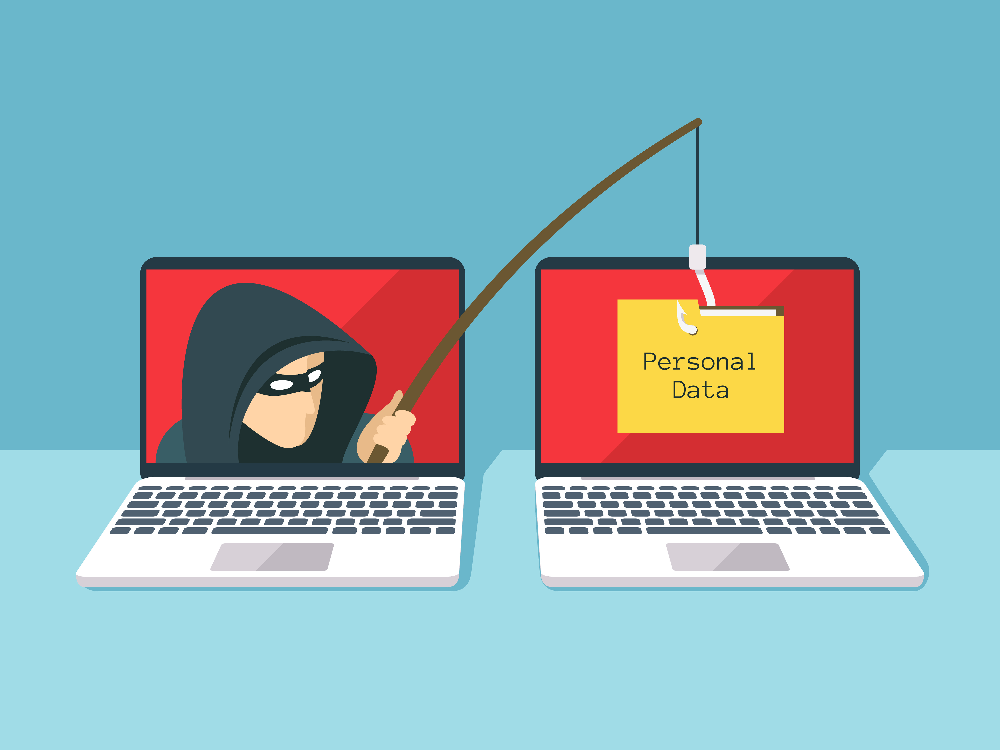

Phishing scams – publishing is vulnerable too.What you need to know
At Frontiers, everything we do is embedded in technology.In fact, did you know that around 35% of Frontiers staff work in technology?Ranging from data scientists to software engineers, system administrators, application support, desktop technicians, and more.
With that expertise in mind, we thought it would be helpful to share some tips, tricks, and guidance with you in an area which could impact your work and lives.We share this information with our own teams so we can help them focus on publishing high-quality science, and hope we can help you too.
Since the coronavirus pandemic erupted last year, many of us have moved to full remote working mode.Unfortunately, this is making cybercriminals happier as their playground has grown.It is becoming more and more important that we are extra vigilant to these threats, and pay close attention to keeping our systems and data secure as responsible cyber-citizens.
To illustrate what’s going on, here are a few statistics from over the last year:
If a phishing attack is successful, any number of things can happen from identity theft to data theft, username and password manipulation, the theft of funds, and fraud.Anything you were previously in charge of online, a cybercriminal may now be in charge of.Worrying, to say the least.
Scholarly publishing is an industry that is as vulnerable to phishing as any other.So below, we offer some guidance and what to look out for!
Let’s dive in, what is 'Phishing'?
In a nutshell, fraudulent email messages which appear to come from a trusted source with the goal of stealing sensitive information, or even infecting your computer with malware.In the past, these emails were coordinated in mass campaigns.Today, however, they are growing increasingly sophisticated, targeted, and look incredibly authentic and convincing when you receive them.
So, how do you classify them?
What to look out for
It is vital that individual cyber citizens take steps to ensure they are doing all they can to learn about the dangers of phishing attacks, which include how to effectively recognize a phishing attempt.Common tell-tale signs include:
What should you do and not do?
There is a lot of information out there to help you recognize these types of scams, check further by clicking here or using your favorite search engine using the key phrase, 'How to recognize and avoid phishing scam'.
aperture':'0','credit':'','camera':'','caption':'','created_timestamp':'0','copyright':'','focal_length':'0','iso':'0','shutter_speed':'0','title':'','orientation':'0'}' data-image-title='frontiers-blog_dv' data-large-file='https://frontiersinblog.files.wordpress.com/2021/02/frontiers-blog_dv.png?w=940' data-medium-file='https://frontiersinblog.files.wordpress.com/2021/02/frontiers-blog_dv.png?w=300' data-orig-file='https://frontiersinblog.files.wordpress.com/2021/02/frontiers-blog_dv.png' data-orig-size='2083,696' data-permalink='https://blog.frontiersin.org/frontiers-blog_dv/' sizes='(max-width: 1024px) 100vw, 1024px' src='https://frontiersinblog.files.wordpress.com/2021/02/frontiers-blog_dv.png?w=2048' srcset='https://frontiersinblog.files.wordpress.com/2021/02/frontiers-blog_dv.png?w=1024 1024w, https://frontiersinblog.files.wordpress.com/2021/02/frontiers-blog_dv.png?w=2048 2048w, https://frontiersinblog.files.wordpress.com/2021/02/frontiers-blog_dv.png?w=150 150w, https://frontiersinblog.files.wordpress.com/2021/02/frontiers-blog_dv.png?w=300 300w, https://frontiersinblog.files.wordpress.com/2021/02/frontiers-blog_dv.png?w=768 768w'>
Posted On: 2021-02-19T00:00:00

Content Date: 2021-02-19
Download Date: 2021-07-10
Document ID: L0C04F26T